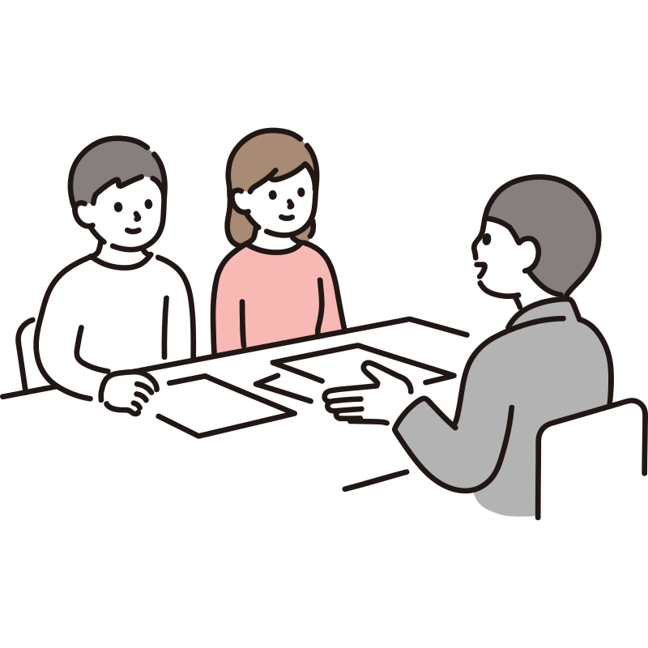

RELATIONSHIPSI chose psychology out of a deep fascination with human nature and our inner world—the experiences that shape us, the choices we make, and how we navigate life’s challenges.
I believe self-discovery isn't a single destination, but a continuous journey. At times difficult or confusing, it is always rich with opportunities to understand ourselves more deeply.
In my professional practice, I aim to combine my academic foundation with a profound respect for each person’s unique story.
Our first meeting is a gentle opportunity to get to know each other. We’ll talk about what brings you to therapy, your current challenges, and what you hope to achieve. There’s no pressure to share more than you’re comfortable with—it’s simply a safe space to start exploring your story at your own pace.
You don't need to be in a crisis to benefit from therapy. Whether you're navigating a difficult life transition, feeling stuck, wanting to understand yourself better, or working through specific mental health concerns, therapy offers guidance and dedicated space for your personal growth.
Because self-discovery and healing are personal journeys, the timeline is unique to everyone. Some people find the clarity they need in a few short-term sessions, while others prefer ongoing support for deeper reflection and change. We will regularly check in together to see what feels right for you.
I believe that how we travel the path of self-discovery matters just as much as the destination. My practice blends evidence-based psychological methods with deep respect for your individual experience, focusing on empathy, self-awareness, and personal resilience.
You don't need to prepare anything formal. Just come as you are. If it helps, you can jot down a few thoughts or questions you’d like to discuss, but we can also just let the conversation unfold naturally.